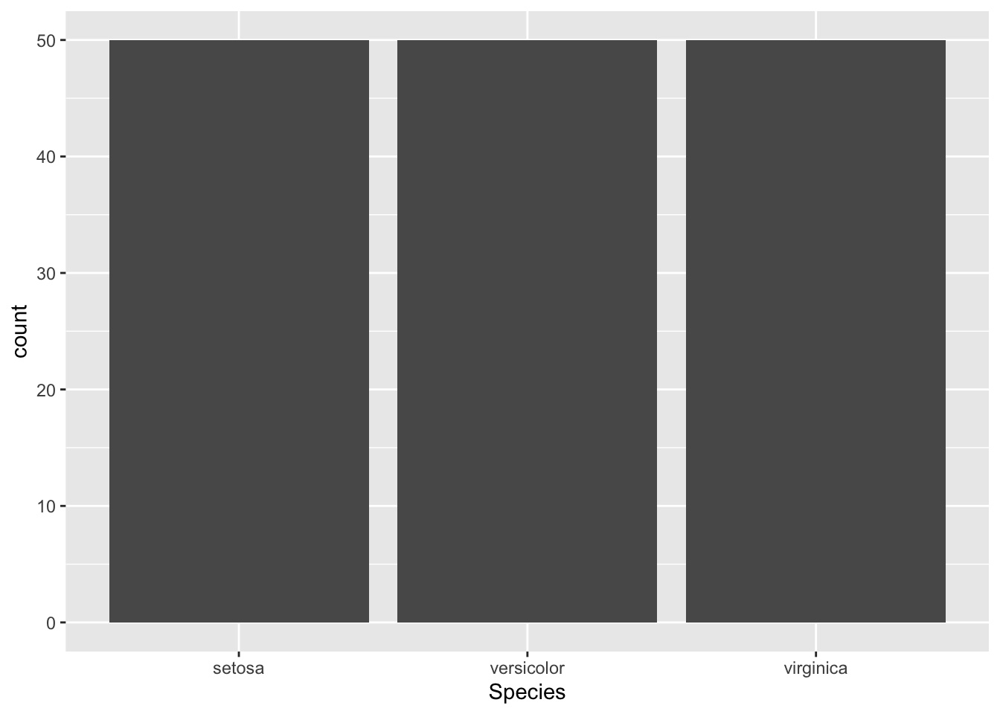
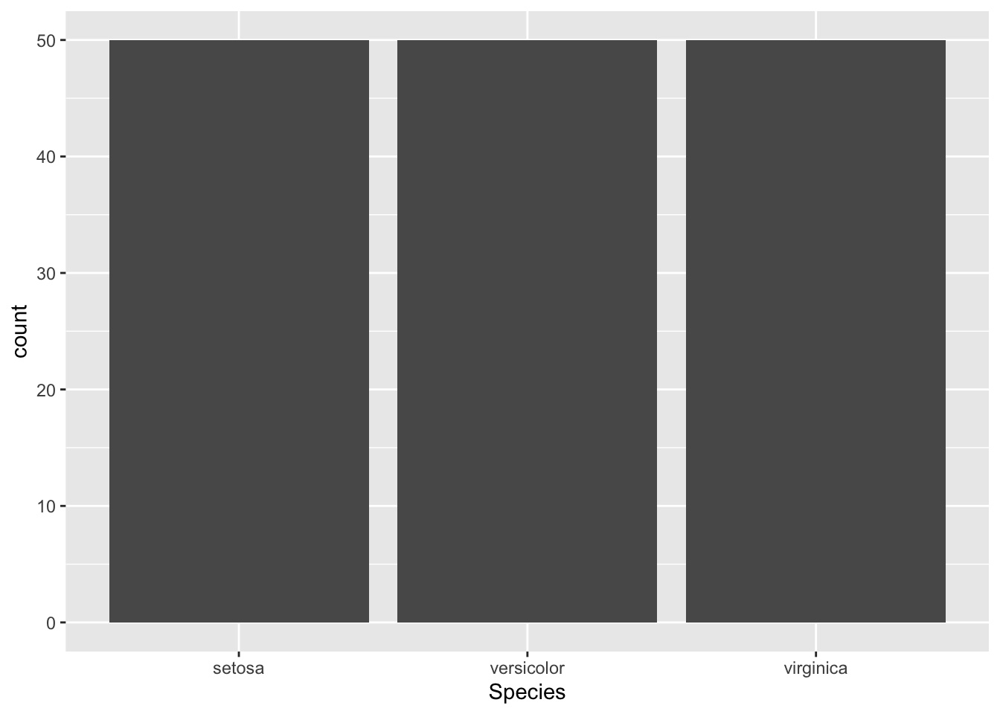
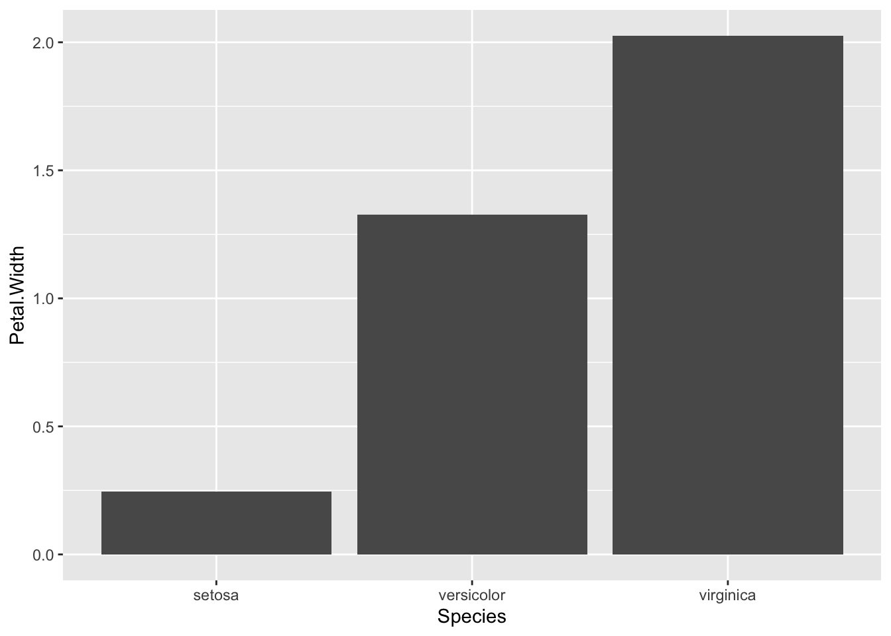

library(ggplot2) #Loading ggplot2 package
data("iris") #Loading the built-in mtcars data set
ggplot(data = iris, mapping = aes(x = Species)) +
geom_bar()
One of the key ways to explore and present your data is through graphing it. R is an excellent way to make all types of graphs, ranging from rough-draft level to publication-ready figures. While you may see references to base R graphing in other sources, our focus is on using the ggplot2 package, a package that is a part of the Tidyverse collection of packages that make every step of working with data easier.
The basis of ggplot2 is the ggplot() function. Using this function, you initialize your graph and provide the data that you want to plot. Think of this as the foundation of your graph. While it is not visible (as this function does not produce anything by itself), it is what the architecture of the graph rests on. The two main parameters are data and mapping. The first one is where you provide your data object and the second is how you tell ggplot what columns in your data correspond to what parts of the graph, such as the x or y axis.
Here is an example from the iris data set built into R:
ggplot(data = iris, mapping = aes(x = Species))Take note of the use of the aes() function in the mapping parameter declaration. This function acts as a helper, formatting the axis and group assignments of data columns into a form that the ggplot() function understands. A common error is forgetting the aes() function.
However, you may have noticed that nothing has been plotted. While we have told R what data to use and how to assign our different variables, we need to now tell it how we wish the data to be represented. This is when we use one of the many geom (short for geometry) functions. Now that the foundation is set, we can start building the house!
One of the most basic and useful graphs you may encounter is the humble bar graph. By using the geom function geom_bar(), we can make a bar plot based on our cars data.
ggplot(data = iris, mapping = aes(x = Species)) +
geom_bar()Notice how the two functions are combined using a plus sign. This is how ggplot2 connects functions, enabling us to build a graph without needing to use one very long function that would quickly become inconvenient. The geom_bar() function inherits the data and variable mappings from the ggplot() function, where it then visualizes the data accordingly. Since the data was previously provided, the geom_bar() function requires no specialized parameters, and I am happy with the default look, we do not have to provide any parameters to the function. Lets see what happens when we run these commands!
library(ggplot2) #Loading ggplot2 package
data("iris") #Loading the built-in mtcars data set
ggplot(data = iris, mapping = aes(x = Species)) +
geom_bar()
While this isn’t the most exciting graph, it is informative. It tells us that there are three species of irises in this data set, each with 50 observations. However, what if we wanted to make it so that we graphed the mean petal width by species? Then we need to provide make a few changes. First, we have to tell theggplot() command that our y values will come from the Petal.Width column. Second, we have to tell the geom to find the mean value of the pedal widths. Lets try!
First, lay our foundation:
ggplot(data = iris, mapping = aes(x = Species, y = Petal.Width))Next, lets make our graph:
ggplot(data = iris, mapping = aes(x = Species, y = Petal.Width)) +
geom_bar(stat = "summary", fun = "mean")
Notice the stat and fun parameters in the geom_bar() function? That is what tells ggplot to take the mean petal width rather than counting every data entry or adding them all together. The stat parameter tells the geom how to compute the data. By default in the geom_bar() function, it is set to count, where it counts the number of data entries per x value and graphs that. That is what we saw above with the different species. As a mean is a summary statistic, we have to tell ggplot to set the stat to "summary". However, there are many different types of summary statistics, so we use the fun parameter to tell it to use the mean function. This makes our lovely plot! The next steps are to explore the options beyond simple bar plots and learn how to customize our graphs to be more visually pleasing.